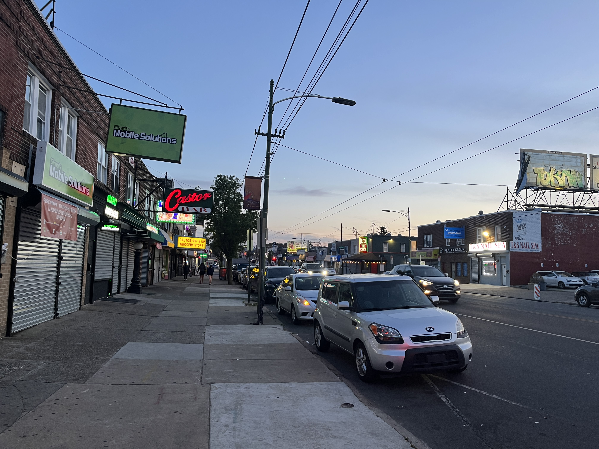
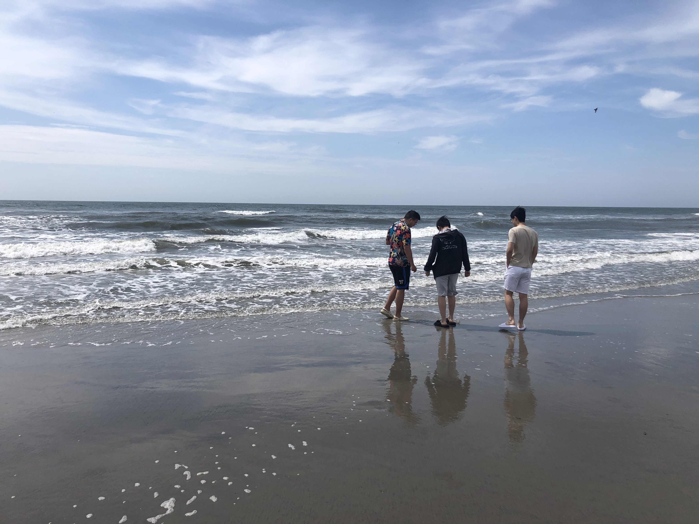

Secret Album
Oct. 9th, 2022
1 / 3
KoKo Wings
2 / 3
Hot pot
3 / 3
Statue of Liberty
❮
❯
May 15th, 2023
1 / 3

Best Chinese restaurant in Philly, Guess where it is
2 / 3
Tropicana
3 / 3

Atlantic Ocean
❮
❯